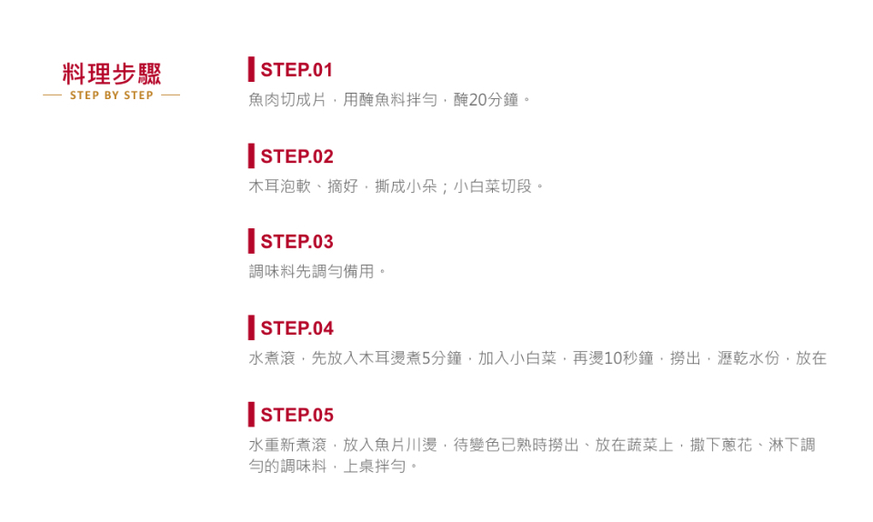
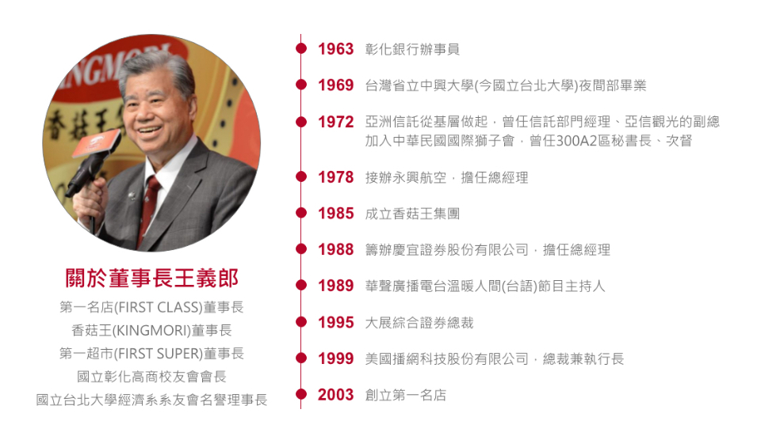

色彩規範
品牌形象及產品以日式風格為主，運用LOGO主色紅色，搭配金褐色，呈現進口商品的高級質感。
將舊有官網，重新做資訊統整，改版成RWD設計，擴展不同的消費族群。
另外也協助客戶，使用其他社群媒體增加曝光度，將商品架設網購平台，整合線上線下的行銷策略。
品牌消費族群以高年齡為主，網頁整體以精簡明瞭、方便長者點擊瀏覽來進行設計。
品牌形象及產品以日式風格為主，運用LOGO主色紅色，搭配金褐色，呈現進口商品的高級質感。
首頁以簡單線條感的icon圖像，搭配文字設計，分割每個區塊的主題，再以色塊交錯的排版，呈現簡潔的畫面，以便長者瀏覽閱讀。
運用Tab切換分類及卡片式圖文呈現重點資訊。
參考書籍的排版形式，將食譜分為食材、步驟，這兩大區塊來呈現資訊，搭配影音教學，更清楚料理的製作過程。
董事長親力親為的形象，提升消費者對於品牌的好感度，聯絡表單及公司資訊，以留白簡潔的設計，方便長者填寫。
董事長出生於彰化，為了回饋鄉親，將彰化各地小農栽種的好食材，結合第一名店頂級醬料
透過優良技術，做出屬於彰南的特色商品。
將各市區商品連結以圓形按鈕為設計，方便長者點擊。